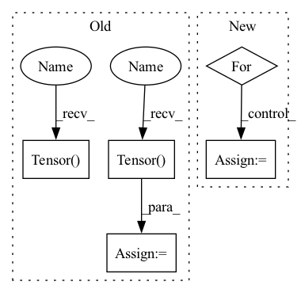

Pattern ID :15221

Before Change
w_percentile = np.percentile(w_copy, percentile)
b_percentile = np.percentile(b_copy, percentile)
new_w_mask = torch.Tensor((w_copy >= w_percentile).astype(int))
new_b_mask = torch.Tensor((b_copy >= b_percentile).astype(int))
self.w_mask = new_w_mask
self.b_mask = new_b_mask
self.w = torch.nn.Parameter(
After Change
for task_num in range(self.num_tasks):
if task_num != 0:
for prev_idx in range(task_num - 1):
w_copy[task_num][new_w_mask[prev_idx] == 1] = 0
b_copy[task_num][new_b_mask[prev_idx] == 1] = 0
w_percentile = np.percentile(w_copy[task_num], percentile)
b_percentile = np.percentile(b_copy[task_num], percentile)
In pattern: SUPERPATTERN
Frequency: 3
Non-data size: 5
Instances
Fragment ID: 51419520
Project Name: beyond-ml-labs/beyondml
Commit Name: 03dd7b87e47d75ba5a7317f31e1ff50b340898a7
Time: 2022-06-02
Author: 77127228+jacobrenn@users.noreply.github.com
File Name: mann/burning/layers/MultiMaskedConv2D.py
M Class Name: MultiMaskedConv2D
N Class Name: MultiMaskedConv2D
M Method Name: prune(2)
N Method Name: prune(2)
M Parent Class: torch.nn.Module
N Parent Class: torch.nn.Module
M File Name: mann/burning/layers/MultiMaskedConv2D.py
N File Name: mann/burning/layers/MultiMaskedConv2D.py
M Start Line: 98
M End Line: 107
N Start Line: 85
N End Line: 103
'>
Before Change
segment_IDs.append("{}_{}-{}".format(source_data["utterance-ID"], start, end))
mixture = torch.Tensor(mixture).float()
sources = torch.Tensor(sources).float()
return mixture, sources, segment_IDs
After Change
sources = []
for _source in __sources__:
source, sr = sf.read(sources_data[_source]["path"])
source = source[start_idx: end_idx].mean(axis=1)
print(source.shape)
sources.append(sources)
'>
Fragment ID: 51419509
Project Name: tky823/dnn-based_source_separation
Commit Name: 550c9be6c6db5a89b57716fc49f1c95f913c05ad
Time: 2020-12-29
Author: 40362510+tky823@users.noreply.github.com
File Name: egs/dsd100/common/src/dataset.py
M Class Name: WaveDataset
N Class Name: WaveDataset
M Method Name: __getitem__(2)
N Method Name: __getitem__(2)
M Parent Class: DSD100Dataset
N Parent Class: DSD100Dataset
M File Name: egs/dsd100/common/src/dataset.py
N File Name: egs/dsd100/common/src/dataset.py
M Start Line: 50
M End Line: 74
N Start Line: 33
N End Line: 50
'>
Before Change
w_percentile = np.percentile(w_copy, percentile)
b_percentile = np.percentile(b_copy, percentile)
new_w_mask = torch.Tensor((w_copy >= w_percentile).astype(int))
new_b_mask = torch.Tensor((b_copy >= b_percentile).astype(int))
self.w_mask = new_w_mask
self.b_mask = new_b_mask
self.w = torch.nn.Parameter(
After Change
for task_num in range(self.num_tasks):
if task_num != 0:
for prev_idx in range(task_num - 1):
w_copy[task_num][new_w_mask[prev_idx] == 1] = 0
b_copy[task_num][new_b_mask[prev_idx] == 1] = 0
w_percentile = np.percentile(w_copy[task_num], percentile)
b_percentile = np.percentile(b_copy[task_num], percentile)
'>
Fragment ID: 51419526
Project Name: beyond-ml-labs/beyondml
Commit Name: 03dd7b87e47d75ba5a7317f31e1ff50b340898a7
Time: 2022-06-02
Author: 77127228+jacobrenn@users.noreply.github.com
File Name: mann/burning/layers/MultiMaskedDense.py
M Class Name: MultiMaskedDense
N Class Name: MultiMaskedDense
M Method Name: prune(2)
N Method Name: prune(2)
M Parent Class: torch.nn.Module
N Parent Class: torch.nn.Module
M File Name: mann/burning/layers/MultiMaskedDense.py
N File Name: mann/burning/layers/MultiMaskedDense.py
M Start Line: 43
M End Line: 52
N Start Line: 40
N End Line: 58